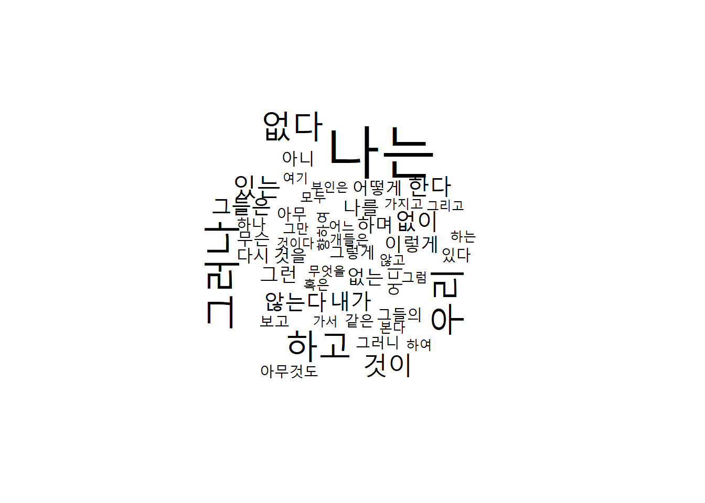
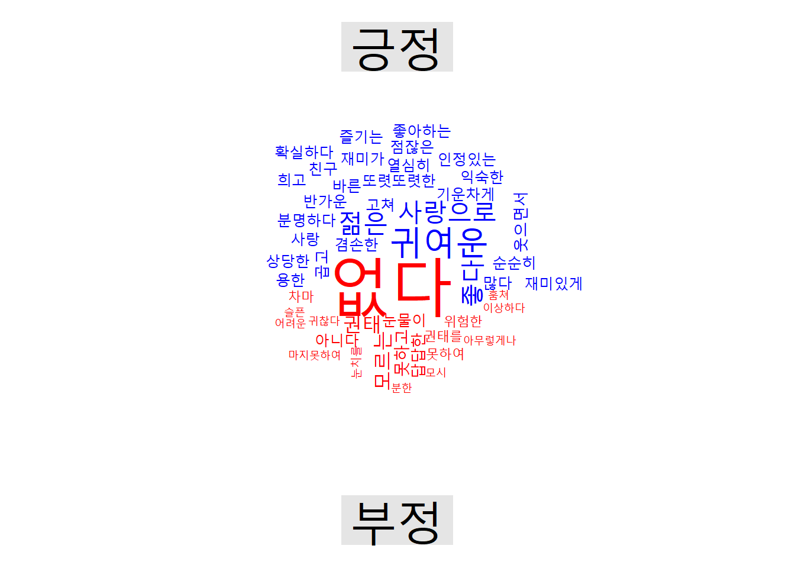

Chapter 8 분석1: 감정어 빈도
단어(term) - 문서(document) - 말뭉치(corpus)
- 사전방식
- 말뭉치에서 많이 사용된 일군의 단어집단의 빈도 계산. 감정사전을 이용하면 감정어 빈도를 구할 수 있다.
- tf_idf
- 말뭉치의 문서별로 중요하게 사용된 단어의 빈도 계산
- 주제모형(topic modeling)
- 말뭉치에서 주제를 나타내는 단어의 분포 계산
사전방식은 말뭉치에서 많이 사용된 일군의 단어를 사전으로 만들어 해당 단어 집단의 빈도 계산.
- 감정사전 각 단어를 감정에 따라 분류
- 도덕기반사전 각 단어를 도덕감정에 따라 분류
- LIWC(Linguistic Inquiry and Word Count) 일상에서 사용하는 단어를 통해 생각, 느낌 등의 심리 측정. 상용.
8.1 국문 감정사전
- 영문감정사전은
tidytext에 포함된 3종의 감정사전이 있다.
군산대 소프트웨어융합공학과 Data Intelligence Lab에서 개발한 한국어감정사전이다. 표준국어대사전을 구성하는 각 단어의 뜻풀이를 분석하여 긍부정어를 추출했다.
보편적인 기본 감정 표현을 나타내는 긍부정어로 구성된다. 보편적인 긍정 표현으로는 ‘감동받다,’ ‘가치 있다,’ ‘감사하다’와 보편적인 부정 표현으로는 ‘그저 그렇다,’ ‘도저히 ~수 없다,’ ‘열 받다’ 등이 있다. 이 사전을 토대로 각 영역(음식, 여행지 등)별 감정사전을 구축하는 기초 자료로 활용할 수 있다.
KNU한국어감성사전은 다음 자료를 통합해 개발했다.
- 국립국어원 표준국어대사전의 뜻풀이(glosses) 분석을 통한 긍부정 추출(이 방법을 통해 대부분의 긍부정어 추출)
- 김은영(2004)의 긍부정어 목록
- SentiWordNet 및 SenticNet-5.0에서 주로 사용되는 긍부정어 번역
- 최근 온라인에서 많이 사용되는 축약어 및 긍부정 이모티콘 목록
위 자료를 통합해 총 1만4천여개의 1-gram, 2-gram, 관용구, 문형, 축약어, 이모티콘 등에 대한 긍정, 중립, 부정 판별 및 정도(degree)의 값 계산했다.
8.1.1 사전 데이터프레임 만들기
KNU한국어감정사전을 다운로드 받아 압축을 풀어 데이터프레임 “senti_dic_df”에 할당하자.
먼저 파일을 data폴더에 다운로드해 knusenti.zip파일로 저장한다.
pkg_v <- c("tidyverse", "tidytext", "epubr",
"RcppMeCab", "KoNLP" )
lapply(pkg_v, require, ch = T)## Loading required package: tidyverse## -- Attaching packages --------------------------------------- tidyverse 1.3.0 --## v ggplot2 3.3.2 v purrr 0.3.4
## v tibble 3.0.4 v dplyr 1.0.2
## v tidyr 1.1.2 v stringr 1.4.0
## v readr 1.4.0 v forcats 0.5.0## -- Conflicts ------------------------------------------ tidyverse_conflicts() --
## x dplyr::filter() masks stats::filter()
## x dplyr::lag() masks stats::lag()## Loading required package: tidytext## Loading required package: epubr## Loading required package: RcppMeCab## Loading required package: KoNLP## Checking user defined dictionary!## [[1]]
## [1] TRUE
##
## [[2]]
## [1] TRUE
##
## [[3]]
## [1] TRUE
##
## [[4]]
## [1] TRUE
##
## [[5]]
## [1] TRUEurl_v <- "https://github.com/park1200656/KnuSentiLex/archive/refs/heads/master.zip"
dest_v <- "data/knusenti.zip"
download.file(url = url_v,
destfile = dest_v,
mode = "wb")
list.files("data/.")다운로드받은 knusenti.zip파일을 압축해제해 필요한 사전자료의 위치를 파악한다.
unzip("knusenti.zip", exdir = "data")
list.files("data/.")data/KnuSentiLex-master 폴더에 있는 파일의 종류를 탐색한다.
list.files("data/KnuSentiLex-master/.")## [1] "data" "KnuSentiLex"
## [3] "knusl.py" "neg_pol_word.txt"
## [5] "obj_unknown_pol_word.txt" "pos_pol_word.txt"
## [7] "README.md" "ReadMe.txt"
## [9] "SentiWord_Dict.txt"SentiWord_Dict.txt가 사전내용이 들어있는 파일이다. 9번째 있으므로, 이를 선택해 R환경으로 이입하자.
senti_name_v <- list.files("data/KnuSentiLex-master/.")[9]
senti_name_v## [1] "SentiWord_Dict.txt"read_lines(str_c("data/KnuSentiLex-master/", senti_name_v)) %>% head(10)## [1] "(-;\t1" "(;_;)\t-1" "(^^)\t1" "(^-^)\t1" "(^^*\t1" "(^_^)\t1"
## [7] "(^_^;\t-1" "(^o^)\t1" "(-_-)\t-1" "(T_T)\t-1"개별 요소와 요소 사이가 공백문자로 구분돼 있다.
read_lines(str_c("data/KnuSentiLex-master/", senti_name_v)) %>%
head(10) %>% str_extract("\t|\n| ")요소를 구분한 공백문자는 탭(\t)이다. read_tsv로 이입해 내용을 검토하자.
read_tsv(str_c("data/KnuSentiLex-master/", senti_name_v)) %>% head(10)
read_tsv(str_c("data/KnuSentiLex-master/", senti_name_v), col_names = F) %>% head(10)senti_dic_df에 할당하자.
senti_dic_df <- read_tsv(str_c("data/KnuSentiLex-master/", senti_name_v), col_names = F)##
## -- Column specification --------------------------------------------------------
## cols(
## X1 = col_character(),
## X2 = col_double()
## )## Warning: 1 parsing failure.
## row col expected actual file
## 14851 -- 2 columns 1 columns 'data/KnuSentiLex-master/SentiWord_Dict.txt'glimpse(senti_dic_df)## Rows: 14,855
## Columns: 2
## $ X1 <chr> "(-;", "(;_;)", "(^^)", "(^-^)", "(^^*", "(^_^)", "(^_^;", "(^o^...
## $ X2 <dbl> 1, -1, 1, 1, 1, 1, -1, 1, -1, -1, -1, -1, 1, 1, 1, 1, 1, -1, 1, ...senti_dic_df[1-5, ]## # A tibble: 14,854 x 2
## X1 X2
## <chr> <dbl>
## 1 (-; 1
## 2 (;_;) -1
## 3 (^^) 1
## 4 (^^* 1
## 5 (^_^) 1
## 6 (^_^; -1
## 7 (^o^) 1
## 8 (-_-) -1
## 9 (T_T) -1
## 10 (ㅡㅡ) -1
## # ... with 14,844 more rows열의 이름을 내용에 맞게 변경하자. 감정단어의 열은 word로, 감정점수의 열은 sScore로 변경.
senti_dic_df <- senti_dic_df %>% rename(word = X1, sScore = X2)
glimpse(senti_dic_df)## Rows: 14,855
## Columns: 2
## $ word <chr> "(-;", "(;_;)", "(^^)", "(^-^)", "(^^*", "(^_^)", "(^_^;", "...
## $ sScore <dbl> 1, -1, 1, 1, 1, 1, -1, 1, -1, -1, -1, -1, 1, 1, 1, 1, 1, -1,...이제 KNU한국어감성사전을 R환경에서 사용할 수 있다.
8.1.1.0.1 사전내용
KNU감성사전에 포함된 긍정단어와 부정단어를 살펴보자.
senti_dic_df %>% filter(sScore == 2) %>% arrange(word)## # A tibble: 2,603 x 2
## word sScore
## <chr> <dbl>
## 1 가능성이 늘어나다 2
## 2 가능성이 있다고 2
## 3 가능하다 2
## 4 가볍고 상쾌하다 2
## 5 가볍고 상쾌한 2
## 6 가볍고 시원하게 2
## 7 가볍고 편안하게 2
## 8 가볍고 환하게 2
## 9 가운데에서 뛰어남 2
## 10 가장 거룩한 2
## # ... with 2,593 more rowssenti_dic_df %>% filter(sScore == -2) %>% arrange(word)## # A tibble: 4,799 x 2
## word sScore
## <chr> <dbl>
## 1 가난 -2
## 2 가난뱅이 -2
## 3 가난살이 -2
## 4 가난살이하다 -2
## 5 가난설음 -2
## 6 가난에 -2
## 7 가난에 쪼들려서 -2
## 8 가난하게 -2
## 9 가난하고 -2
## 10 가난하고 어렵다 -2
## # ... with 4,789 more rows각 감정점수별로 단어의 수를 계산해보자.
senti_dic_df %>% count(sScore)## # A tibble: 6 x 2
## sScore n
## <dbl> <int>
## 1 -2 4799
## 2 -1 5030
## 3 0 154
## 4 1 2268
## 5 2 2603
## 6 NA 1감정점수가 -2 ~ 2까지 정수로 부여돼 있다. 이를 3단계로 줄여 각각 ’긍정, 중립, 부정’으로 명칭을 바꾸자.
senti_dic_df %>%
mutate(emotion = ifelse(sScore >= 1, "positive",
ifelse(sScore <= -1, "negative", "neutral"))) %>%
count(emotion)## # A tibble: 4 x 2
## emotion n
## <chr> <int>
## 1 negative 9829
## 2 neutral 154
## 3 positive 4871
## 4 <NA> 1sScore 열에 결측값이 한 행에 있다. 감정단어와 감정값 사이에 \t이 아닌 기호로 분리돼 있었기 때문이다. 결측값이 있는 행을 제거하고, 해당 내용을 추가하자.
senti_dic_df$sScore %>% unique()## [1] 1 -1 0 -2 2 NAsenti_dic_df %>%
filter(is.na(sScore)) ## # A tibble: 1 x 2
## word sScore
## <chr> <dbl>
## 1 갈등 -1 NAsenti_dic_df %>%
filter(!is.na(sScore)) %>%
add_row(word = "갈등", sScore = -1) -> senti_dic_df
senti_dic_df %>%
filter(!is.na(sScore)) %>% count(sScore)## # A tibble: 5 x 2
## sScore n
## <dbl> <int>
## 1 -2 4799
## 2 -1 5031
## 3 0 154
## 4 1 2268
## 5 2 2603knu_dic_df <- senti_dic_df %>%
filter(!is.na(sScore))8.1.2 연습
헌번전문을 토큰화한 다음, 긍정어와 부정어의 빈도를 계산하려고 한다. 이를 위해 토큰화한 헌법전문과 KNU한국어감성사전을 결합해 감정 단어만 추려내려 한다. 다음 중 어느 결합을 이용해야 하는가? 왜?
- semi_join
- anti_join
- inner_join
- left_join
- right_join
- full_join
위에서 선택한 _join으로 KNU한국어감성사전을 이용해 헌법전문에서 긍정어와 부정어를 추출하자.
con_v <- "유구한 역사와 전통에 빛나는 우리 대한국민은 3·1운동으로 건립된 대한민국임시정부의 법통과 불의에 항거한 4·19민주이념을 계승하고, 조국의 민주개혁과 평화적 통일의 사명에 입각하여 정의·인도와 동포애로써 민족의 단결을 공고히 하고, 모든 사회적 폐습과 불의를 타파하며, 자율과 조화를 바탕으로 자유민주적 기본질서를 더욱 확고히 하여 정치·경제·사회·문화의 모든 영역에 있어서 각인의 기회를 균등히 하고, 능력을 최고도로 발휘하게 하며, 자유와 권리에 따르는 책임과 의무를 완수하게 하여, 안으로는 국민생활의 균등한 향상을 기하고 밖으로는 항구적인 세계평화와 인류공영에 이바지함으로써 우리들과 우리들의 자손의 안전과 자유와 행복을 영원히 확보할 것을 다짐하면서 1948년 7월 12일에 제정되고 8차에 걸쳐 개정된 헌법을 이제 국회의 의결을 거쳐 국민투표에 의하여 개정한다."
tibble(text = con_v) %>%
unnest_tokens(output = word,
input = text) %>%
inner_join(knu_dic_df)## Joining, by = "word"## # A tibble: 2 x 2
## word sScore
## <chr> <dbl>
## 1 조화를 2
## 2 행복을 2형태소를 추출해 분석해보자. RcppMeCab 사용
con_v %>% enc2utf8 %>% tibble(text = .) %>%
unnest_tokens(output = word,
input = text,
token = pos) %>%
separate(col = word,
into = c("word", "morph"),
sep = "/") %>%
inner_join(knu_dic_df)## Joining, by = "word"## # A tibble: 7 x 3
## word morph sScore
## <chr> <chr> <dbl>
## 1 조화 nng 2
## 2 능력 nng 1
## 3 최고 nng 2
## 4 향상 nng 1
## 5 안전 nng 2
## 6 행복 nng 2
## 7 짐 nng -1KoNLP로 분석해보자.
con_v %>% SimplePos09() %>% flatten_dfc() %>%
pivot_longer(everything(),
names_to = "header",
values_to = "value") %>%
separate_rows(value, sep = "\\+") %>%
separate(value, into = c("word", "pos"), sep = "/") %>%
inner_join(knu_dic_df)## New names:
## * `하고,` -> `하고,...26`
## * 모든 -> 모든...27
## * 모든 -> 모든...41
## * `하고,` -> `하고,...47`
## * 자유와 -> 자유와...52
## * ...## Joining, by = "word"## # A tibble: 6 x 4
## header word pos sScore
## <chr> <chr> <chr> <dbl>
## 1 빛나는 빛 N 1
## 2 조화를 조화 N 2
## 3 능력을 능력 N 1
## 4 향상을 향상 N 1
## 5 안전과 안전 N 2
## 6 행복을 행복 N 2감정사전에 없는 단어를 제거하지 말고 결합해보자. left_join을 이용한다. 감성사전에 없는 단어에는 sScore열의 NA를 0으로 바꾼다.
con_v %>% SimplePos09() %>% flatten_dfc() %>%
pivot_longer(everything(),
names_to = "header",
values_to = "value") %>%
separate_rows(value, sep = "\\+") %>%
separate(value, into = c("word", "pos"), sep = "/") %>%
left_join(knu_dic_df) %>%
mutate(sScore = ifelse(is.na(sScore), 0, sScore)) %>%
arrange(desc(sScore))## New names:
## * `하고,` -> `하고,...26`
## * 모든 -> 모든...27
## * 모든 -> 모든...41
## * `하고,` -> `하고,...47`
## * 자유와 -> 자유와...52
## * ...## Joining, by = "word"## # A tibble: 185 x 4
## header word pos sScore
## <chr> <chr> <chr> <dbl>
## 1 조화를 조화 N 2
## 2 안전과 안전 N 2
## 3 행복을 행복 N 2
## 4 빛나는 빛 N 1
## 5 능력을 능력 N 1
## 6 향상을 향상 N 1
## 7 유구한 유구한 N 0
## 8 역사와 역사 N 0
## 9 역사와 와 J 0
## 10 전통에 전통 N 0
## # ... with 175 more rows헌법 전문의 감정점수를 구해보자.
con_v %>% SimplePos09() %>% flatten_dfc() %>%
pivot_longer(everything(),
names_to = "header",
values_to = "value") %>%
separate_rows(value, sep = "\\+") %>%
separate(value, into = c("word", "pos"), sep = "/") %>%
left_join(knu_dic_df) %>%
mutate(sScore = ifelse(is.na(sScore), 0, sScore)) %>%
summarise(score = sum(sScore))## New names:
## * `하고,` -> `하고,...26`
## * 모든 -> 모든...27
## * 모든 -> 모든...41
## * `하고,` -> `하고,...47`
## * 자유와 -> 자유와...52
## * ...## Joining, by = "word"## # A tibble: 1 x 1
## score
## <dbl>
## 1 98.2 감정분석
긴 문서를 이용해 분석해보자.
8.2.1 수집
한글소설을 모아놓은 직지프로젝트 파일을 다운로드 받는다.
dir.create("data")
file_url <- 'https://www.dropbox.com/s/ug3pi74dnxb66wj/jikji.epub?dl=1'
download.file(url = file_url,
destfile = "data/jikji.epub",
mode="wb")다운로드받은 epub파일을 R환경으로 이입해 데이터구조를 살핀다.
epub("data/jikji.epub") %>% glimpse()## Rows: 1
## Columns: 8
## $ identifier <chr> "urn:uuid:15037ed1-7721-4f33-8534-f6a7473ab654"
## $ title <chr> "직지 프로젝트"
## $ creator <chr> "수학방"
## $ language <chr> "ko"
## $ date <chr> "2013-05-10"
## $ rights <chr> "크리에이티브 커먼즈 저작자표시-비영리-동일조건변경허락 2.0 대한민국"
## $ source <chr> "직지프로젝트(http://www.jikji.org)"
## $ data <list> [<tbl_df[93 x 4]>]데이터는 리스트구조의 data열 안의 93행 4열의 데이터프레임에 저장돼 있다. 리스트구조의 첬재 요소이므로 [[ ]]로 부분선택해 구조를 살펴보자.
jikji_all_df <- epub("data/jikji.epub") %>% .$data %>% .[[1]] %>%
arrange(desc(nchar))8.2.2 정제
text열에 93편의 소설 본문이 들어있다. sosul_v에 할당해 구조를 살펴보자.
sosul_v <- epub("data/jikji.epub") %>% .$data %>% .[[1]] %>% .$text
sosul_v %>% glimpse## Named chr [1:93] "17원 50전(十七圓五十錢)--- 젋은 화가 A의 눈물 한 방울\n\n 지은이: 나도향\n\n 출전: 개벽, <1923>\n\n 공개"| __truncated__ ...
## - attr(*, "names")= chr [1:93] "C:/Users/Public/Documents/ESTsoft/CreatorTemp/RtmpADhRkZ/jikji/OEBPS/Text/2.xhtml" "C:/Users/Public/Documents/ESTsoft/CreatorTemp/RtmpADhRkZ/jikji/OEBPS/Text/3.xhtml" "C:/Users/Public/Documents/ESTsoft/CreatorTemp/RtmpADhRkZ/jikji/OEBPS/Text/4.xhtml" "C:/Users/Public/Documents/ESTsoft/CreatorTemp/RtmpADhRkZ/jikji/OEBPS/Text/5.xhtml" ...소설 제목, 지은이, 출전, 본문을 추출해보자.
sosul_v %>% str_extract(".*\\b")## [1] "17원 50전(十七圓五十錢)--- 젋은 화가 A의 눈물 한 방울"
## [2] "B사감(舍監)과 러브레터"
## [3] "경희(瓊姬"
## [4] "계집 하인"
## [5] "고향"
## [6] "공포(恐怖)의 기록(記錄"
## [7] "광화사(狂畵師"
## [8] "구운몽(완판 105장본) 현대문"
## [9] "권태"
## [10] "규원"
## [11] "그립은 흘긴 눈"
## [12] "금따는 콩밭"
## [13] "금붕어"
## [14] "김탄실과 그 아들"
## [15] "까막잡기"
## [16] "깨뜨려지는 홍등(紅燈"
## [17] "꿈"
## [18] "낙엽기"
## [19] "날개"
## [20] "노령근해(露領近海"
## [21] "눈 내리는 오후"
## [22] "단발"
## [23] "도시와 유령"
## [24] "동정(同情"
## [25] "동해"
## [26] "돼지(豚"
## [27] "들"
## [28] "만년 샤쓰"
## [29] "말없는 사람"
## [30] "메밀꽃 필 무렵"
## [31] "무지개"
## [32] "물레방아"
## [33] "바람 부는 저녁"
## [34] "바리데기(바리공주"
## [35] "발가락이 닯았다"
## [36] "배따라기"
## [37] "벙어리 삼룡(三龍)이"
## [38] "별을 안거든 우지나 말걸"
## [39] "병상 이후"
## [40] "봉별기(逢別記"
## [41] "북국사신(北國私信"
## [42] "붉은산"
## [43] "빈처(貧妻"
## [44] "뽕"
## [45] "사립 정신병원장"
## [46] "사진"
## [47] "산"
## [48] "산골 나그네"
## [49] "상륙"
## [50] "소 - 전 영택 소설"
## [51] "소낙비"
## [52] "수탉"
## [53] "술 권하는 사회"
## [54] "실락원"
## [55] "실화(失花"
## [56] "약령기(弱齡記"
## [57] "약수"
## [58] "옛날 꿈은 창백하더이다"
## [59] "용(龍)과 용(龍)의 대격전(大激戰"
## [60] "운명"
## [61] "운수좋은 날"
## [62] "운현궁(雲峴宮)의 봄"
## [63] "인간산문(人間散文"
## [64] "자기를 찾기 전"
## [65] "젊은이의 시절"
## [66] "정조(貞操)와 약가(藥價"
## [67] "종생기"
## [68] "주리면.... ---어떤 생활의 단면"
## [69] "지도(地圖)의 암실(暗室"
## [70] "지주회시(<U+8E1F>蛛會豕"
## [71] "지팽이 역사(轢死"
## [72] "지형근(池亨根"
## [73] "차돌멩이"
## [74] "천치(天痴)? 천재(天才"
## [75] "총각과 맹꽁이"
## [76] "크리스마스 전야의 풍경"
## [77] "타락자 (墮落者"
## [78] "퇴별가 -완판본"
## [79] "하늘을 바라보는 여인"
## [80] "한 마리 양"
## [81] "할머니의 죽음"
## [82] "행랑 자식"
## [83] "혈의 누(血の淚"
## [84] "화수분"
## [85] "환시기(幻視記"
## [86] "황소와 도깨비"
## [87] "회생한 손녀에게"
## [88] "휴업(休業)과 사정(事情"
## [89] "흰 닭"
## [90] "차례 - 작가순"
## [91] "차례 - 가나다 순"
## [92] "12월 12일(十二月 十二日"
## [93] "직지프로젝트"sosul_v %>% str_extract("지은이.*\\b") %>% str_remove("지은이: ")## [1] "나도향" "현진건" "나혜석" "나도향" "현진건" "이상" "김동인" "김만중"
## [9] "이상" "나혜석" "현진건" "김유정" "전영택" "전영택" "현진건" "이효석"
## [17] "나도향" "이효석" "이상" "이효석" "전영택" "이상" "이효석" "현진건"
## [25] "이상" "이효석" "이효석" "방정환" "전영택" "이효석" "김동인" "나도향"
## [33] "전영택" "지은이" "김동인" "김동인" "나도향" "나도향" "이상" "이상"
## [41] "이효석" "김동인" "현진건" "나도향" "현진건" "전영택" "이효석" "김유정"
## [49] "이효석" "전영택" "김유정" "이효석" "현진건" "이상" "이상" "이효석"
## [57] "이상" "나도향" "신채호" "전영택" "현진건" "김동인" "이효석" "나도향"
## [65] "나도향" "현진건" "이상" "이효석" "이상" "이상" "이상" "나도향"
## [73] "전영택" "전영택" "김유정" "전영택" "현진건" NA "전영택" "전영택"
## [81] "현진건" "나도향" "이인직" "전영택" "이상" "이상" "나혜석" "이상"
## [89] "전영택" NA NA "이상" NAsosul_v %>% str_extract("출전.*\\b") %>%
str_remove(":") %>% str_remove("\\)") %>% str_remove("출전 ")## [1] "개벽, <1923" "조선문단 5호 <1925"
## [3] NA "조선 문단 5월호 <1925"
## [5] "조선의 얼굴 <1926.3" "매일신보 , 1937.4.15~5.15"
## [7] "야담 1(1935.12" "출전"
## [9] NA "신가정1, 1921년 7월"
## [11] "폐허이후 1 <1923" "<개벽> 3월호, 1935"
## [13] "?, <1959" "?, <1955"
## [15] "개벽 43호 <1923" "대중공론(大衆公論 》4, 1930. 4"
## [17] "조선문단 11월호 <1925" "백광(白光》 1호. 1937. 1"
## [19] "조광 11, 1936.9" "조선강단(朝鮮講壇》1., 1930. 1"
## [21] "?, <1959" "조선문학 17, 1939.4"
## [23] "조선지광(朝鮮之光》79., 1928. 7" "조선의 얼굴 <1926"
## [25] "조광 16, 1936.10" "조선지광(朝鮮之光》1933. 10"
## [27] "신동아》 1936.3" "어린이, 1927년 3월"
## [29] "?, <1964" "조광(朝光》 1936.10"
## [31] "매일신보』 (1930.9" "조선문단 11 <1925.9"
## [33] "?, <1925" "출전"
## [35] "동광 29(1924.1" "창조 9(1921.6"
## [37] "현대평론, <1926" "백조 2호, <1922"
## [39] "청색지 5, 1939.5" "여성 9, 1936.12"
## [41] "신소설》5호, 1930.9" "조선 문단 4(1925.1"
## [43] "개벽 12월호 <1921" "개벽 12월호 <1925"
## [45] "개벽 <1926" "?, <1924"
## [47] "삼천리》69호, 1936.1-3" "제1선지 3월호, 1933"
## [49] "대중공론(大衆公論》, 1930.6" "?, <1947"
## [51] "조선일보 신춘문예, 1935" "《삼천리》, 1933.11"
## [53] "개벽 17호 <1921" "조광, 1939.2"
## [55] "출전" "삼천리》, 1930"
## [57] "중앙, 1936.7" "개벽 30, <1922.12"
## [59] "출전" "창조 3호, <1920"
## [61] "개벽 48호 <1924" "출전"
## [63] "조광》 9호, 1936.7" "개벽, <1924"
## [65] "백조, <1922.1" "신소설 1 <1929"
## [67] "조광 19, 1937.5" "청년》, 1927.3"
## [69] "조선과 건축, 1932.3" "<중앙>, 1936년 6월"
## [71] "월간매신, 1934.8" "조선문단 3, 4, 5월호, <1926"
## [73] "???, <1960" "창조 2호, <1919"
## [75] "신여성 9월호, 1933" "?, <1960"
## [77] "개벽 19-22, <1922" NA
## [79] "?, <1948" "?, <1959"
## [81] "백조 3호 <1923" "개벽 40호, <1923"
## [83] "만세보(1906.7.22~1906.10.10" "?, <1925"
## [85] "청색지 1, 1938.6" "매일신보, 1937.3.5~9"
## [87] "여자계1, 1918년 9월" "조선 4, 1931.4"
## [89] "?, <1925" NA
## [91] NA NA
## [93] NAsosul_v %>% str_squish() %>%
str_extract("본문.*") %>%
str_remove("본문|:") %>% .[5]## [1] " 대구에서 서울로 올라오는 차중에서 생긴 일이다. 나는 나와 마주 앉은 그를 매우 흥미있게 바라보고 또 바라보았다. 두루마기 격으로 기모노를 둘렀고, 그 안에서 옥양목 저고리가 내어 보이며 아랫도리엔 중국식 바지를 입었다. 그것은 그네들이 흔히 입는 유지 모양으로 번질번질한 암갈색 피륙으로 지은 것이었다. 그리고 발은 감발을 하였는데 짚신을 신었고, 고무가리로 깎은 머리엔 모자도 쓰지 않았다. 우연히 이따금 기묘한 모임을 꾸민 것이다. 우리가 자리를 잡은 찻간에는 공교롭게 세 나라 사람이 다 모였으니, 내 옆에는 중국 사람이 기대었다. 그의 옆에는 일본 사람이 앉아 있었다. 그는 동양 삼국옷을 한몸에 감은 보람이 있어 일본말도 곧잘 철철 대이거니와 중국말에도 그리 서툴지 않은 모양이었다. \"고꼬마데 오이데 데스까?(어디까지 가십니까?)\"하고 첫마디를 걸더니만, 도꼬가 어떠니, 오사까가 어떠니, 조선 사람은 고추를 끔찍이 많이 먹는다는 둥, 일본 음식은 너무 싱거워서 처음에는 속이 뉘엿걸다는 둥, 횡설수설 지껄이다가 일본 사람이 엄지와 검지 손가락으로 짧게 끊은 꼿꼿한 윗수염을 비비면서 마지못해 까땍까땍하는 고개와 함께 \"소데스까(그렇습니까)\"란 한 마디로 코대답을 할 따름이요, 잘 받아 주지 않으매, 그는 또 중국인을 붙들고서 실랑이를 하였다. \"니상나열취......\" \"니싱섬마\"하고 덤벼 보았으나 중국인 또한 그 기름낀 뚜우한 얼굴에 수수께끼 같은 웃음을 띨 뿐이요 별로 대구를 하지 않았건만, 그래도 무어라고 연해 웅얼거리면서 나를 보고 웃어 보였다. 그것은 마치 짐승을 놀리는 요술장이가 구경꾼을 바라볼 때처럼 훌륭한 재주를 갈채해 달라는 웃음이었다. 나는 쌀쌀하게 그의 시선을 피해 버렸다. 그 주적대는 꼴이 어줍지 않고 밉살스러웠다. 그는 잠깐 입을 닫치고 무료한 듯이 머리를 덕억덕억 긁기도 하며, 손톱을 이로 물어뜯기도 하고, 멀거니 창 밖을 내다보기도 하다가, 암만해도 중절대지 않고는 못 참겠던지 문득 나에게로 향하며, \"어디꺼정 가는 기오?\"라고 경상도 사투리로 말을 붙인다. \"서울까지 가요.\" \"그런기오. 참 반갑구마. 나도 서울꺼정 가는데. 그러면 우리 동행이 되겠구마.\" 나는 이 지나치게 반가와하는 말씨에 대하여 무어라고 대답할 말도 없고, 또 굳이 대답하기도 싫기에 덤덤히 입을 닫쳐 버렸다. \"서울에 오래 살았는기요?\" 그는 또 물었다. \"육칠년이나 됩니다.\" 조금 성가시다 싶었으되, 대꾸 않을 수도 없었다. \"에이구, 오래 살았구마, 나는 처음길인데 우리 같은 막벌이군이 차를 내려서 어디로 찾아가야 되겠는기요? 일본으로 말하면 기전야도 같은 것이 있는기오?\" 하고 그는 답답한 제 신세를 생각했던지 찡그려 보았다. 그때 나는 그의 얼굴이 웃기보다 찡그리기에 가장 적당한 얼굴임을 발견하였다. 군데군데 찢어진 겅성드뭇한 눈썹이 올올이 일어서며, 아래로 축 처지는 서슬에 양미간에는 여러 가닥 주름이 잡히고, 광대뼈 위로 뺨살이 실룩실룩 보이자 두 볼은 쪽 빨아든다. 입은 소태나 먹은 것처럼 왼편으로 삐뚤어지게 찢어 올라가고, 죄던 눈엔 눈물이 괸 듯 삼십 세밖에 안되어 보이는 그 얼굴이 10년 가량은 늙어진 듯하였다. 나는 그 신산스러운 표정에 얼마쯤 감동이 되어서 그에게 대한 반감이 풀려지는 듯하였다. \"글쎄요, 아마 노동 숙박소란 것이 있지요.\" 노동 숙박소에 대해서 미주알고주알 묻고 나서, \"시방 가면 무슨 일자리를 구하겠는기오?\" 라고 그는 매달리는 듯이 또 꽤쳤다. \"글쎄요, 무슨 일자리를 구할 수 있을는지요.\" 나는 내 대답이 너무 냉랭하고 불친절한 것이 죄송스러웠다. 그러나 일자리에 대하여 아무 지식이 없는 나로서는 이외에 더 좋은 대답을 해 줄 수가 없었던 것이다. 그 대신 나는 은근하게 물었다. \"어디서 오시는 길입니까?\" \"흠, 고향에서 오누마.\" 하고 그는 휘 한숨을 쉬었다. 그러자, 그의 신세타령의 실마리는 풀려 나왔다. 그의 고향은 대구에서 멀지 않은 K군 H란 외따른 동리였다. 한 백호 남짓한 그곳 주님은 전부가 역둔토를 파먹고 살았는데, 역둔토로 말하면 사삿집 땅을 부치는 것보다 떨어지는 것이 후하였다. 그러므로 넉넉지는 못할망정 평화로운 농촌으로 남부럽지 않게 지낼 수 있었다. 그러나 세상이 뒤바뀌자 그 땅은 전부가 동양 척식 회사의 소유에 들어가고 말았다. 직접으로 회사에 소작료를 바치게 되었으면 그래도 나으련만 소위 중간 소작인이란 것이 생겨나서 저는 손에 흙 한 번 만져 보지도 않고 동척엔 소작인 노릇을 하며, 실지인에게는 지주 행세를 하게 되었다. 동척에 소작료를 물고 나서 또 중간 소작료인에게 긁히고 보니, 실작인의 손에는 소출이 3할도 떨어지지 않았다. 그후로 <죽겠다, 못 살겠다>하는 소리는 중이 염불하듯 그들의 입길에서 오르내리게 되었다. 남부여대하고 타처로 유리하는 사람만 늘고 동리는 점점 쇠진해갔다. 지금으로부터 9년 전, 그가 열일곱 살 되던 해 봄에(그의 나이는 실상 스물여섯이었다. 가난과 고생이 얼마나 사람을 늙히는가?) 그의 집안은 살기 좋다는 바람에 서간도로 이사를 갔었다. 쫓겨가는 운명이거든 어디를 간들 신신하랴. 그곳의 비옥한 전야도 그들을 위하여 열려질 리 없었다. 조금 좋은 땅은 먼저 간 이가 모조리 차지하였고 황무지는 비록 많다 하나 그곳 당도하던 날부터 아침거리 저녁거리 걱정이랴. 무슨 행세로 적어도 1년이란 장구한 세월을 먹고 입어 가며 거친 땅을 풀 수가 있으랴. 남의 밑천을 얻어서 농사를 짓고 보니, 가을이 되어 얻는 것은 빈주먹뿐이었다. 이태 동안을 사는 것이 아니라 억지로 버티어 갈 제, 그의 아버지는 망연히 병을 얻어 타국의 외로운 혼이 되고 말았다. 열아홉 살밖에 안된 그가 홀어머니를 보시고 악으로 악으로 모진 목숨을 이어가는 중 4년이 못되어 영양 부족한 몸이 심한 노동에 지친 탓으로 그의 어머니 또한 죽고 말았다. \"모친까장 돌아갔구마.\" \"돌아가실 때 흰죽 한 모금도 못 자셨구마.\"하고 이야기하던 이는 문득 말을 뚝 끊는다. 나는 무엇이라고 위로할 말을 몰랐다. 한동안 머뭇머뭇이 있다가 나는 차를 탈 때에 친구들이 사준 정종병 마개를 빼었다. 찻잔에 부어서 그도 마시고 나도 마셨다. 악착한 운명이 던져 준 깊은 슬픔을 술로 녹이려는 듯이 연거푸 다섯 잔을 마시는 그는 다시 말을 계속하였다. 그후 그는 부모 잃은 땅에 오래 머물기 싫었다. 신의주로, 안동현으로 품을 팔다가 일본으로 또 벌이를 찾아가게 되었다. 규슈 탄광에 있어도 보고, 오사까 철공장에도 몸을 담아 보았다. 벌이는 조금 나았으나 외롭고 젊은 몸은 자연히 방탕해졌다. 돈을 모으려야 모을 수 없고 이따금 울화만 치받치기 때문에 한곳에 주접을 하고 있을 수 없었다. 화도 나고 고국 산천이 그립기도 하여서 훌쩍 뛰어나왔다가 오래간만에 고향을 둘러보고 벌이를 구할 겸 서울로 올라가는 길이라 했다. \"고향에 가시니 반가워하는 사람이 있습디까?\" 나는 탄식하였다. \"반가워하는 사람이 다 뮌기오, 고향이 통 없어졌더마.\" \"그렇겠지요. 9년 동안이나 퍽 변했겠지요.\" \"변하고 뭐고 간에 아무것도 없더마. 집도 없고, 사람도 없고, 개 한 마리도 얼씬을 않더마.\" \"그러면, 아주 폐농이 되었단 말씀이오?\" \"흥, 그렇구마. 무너지다 만 담만 즐비하게 남았드마. 우리 살던 집도 터야 안 남았는기오, 암만 찾아도 못 찾겠더마. 사람 살던 동리가 그렇게 된 것을 혹 구경했는기오?\" 하고 그의 짜는 듯 한 목은 높아졌다. \"썩어 넘어진 서까래, 뚤뚤 구르는 주추는! 꼭 무덤을 파서 해골을 헐어 젖혀놓은 것 같더마. 세상에 이런 일도 있는기오? 백여호 살던 동리가 10년이 못 되어 통 없어지는 수도 있는기오, 후!\" 하고 그는 한숨을 쉬며, 그때의 광경을 눈앞에 그리는 듯이 멀거니 먼산을 보다가 내가 따라 준 술을 꿀꺽 들이켜고, \"참! 가슴이 터지더마, 가슴이 터져\" 하자마자 굵직한 눈물 둬 방울이 뚝뚝 떨어진다. 나는 그 눈물 가운데 음산하고 비참한 조선의 얼굴을 똑똑히 본 듯 싶었다. 이윽고 나는 이런 말을 물었다. \"그래, 이번 길에 고향 사람은 하나도 못 만났습니까?\" \"하나 만났구마, 단지 하나.\" \"친척되는 분이던가요?\" \"아니구마, 한 이웃에 살던 사람이구마.\" 하고 그의 얼굴은 더욱 침울했다. \"여간 반갑지 않으셨지어요.\" \"반갑다마다, 죽은 사람을 만난 것 같더마. 더구나 그 사람은 나와 까닭도 좀 있던 사람인데......\" \"까닭이라니?\" \"나와 혼인 말이 있던 여자구마.\" \"하아!\" 나는 놀란 듯이 벌린 입이 닫혀지지 않았다. \"그 신세도 내 신세만 하구마.\" 하고 그는 또 이야기를 계속하였다. 그 여자는 자기보다 나이 두 살 위였는데, 한이웃에 사는 탓으로 같이 놀기도 하고 싸우기도 하며 자라났다. 그가 열 네살 적부터 그들 부모들 사이에 혼인 말이 있었고 그도 어린 마음에 매우 탐탁하게 생각하였었다. 그런데 그 처녀가 열일곱 살 된 겨울에 별안간 간 곳을 모르게 되었다. 알고 보니, 그 아버지되는 자가 20원을 받고 대구 유곽에 팔아먹은 것이었다. 그 소문이 퍼지자 그 처녀 가족은 그 동리에서 못 살고 멀리 이사를 갔는데 그 후로는 물론 피차에 한 번 만나 보지도 못하였다. 이번에야 빈터만 남은 고향을 구경하고 돌아오는 길에 읍내에서 그 아내될 뻔한 댁과 마주치게 되었다. 처녀는 어떤 일본 사람 집에서 아이를 보고 있었다. 궐녀는 20원 몸값을 10년을 두고 갚았건만 그래도 주인에게 빚이 60원이나 남았었는데, 몸에 몹쓸 병이 들어 나이 늙어져서 산송장이 되니까. 주인되는 자가 특별히 빚을 탕감해 주고, 작년 가을에야 놓아 준 것이었다. 궐녀도 자기와 같이 10년 동안이나 그리던 고향에 찾아오니까 거기에는 집도 없고, 부모도 없고 쓸쓸한 돌무더기만 눈물을 자아낼 뿐이었다. 하루해를 울어 보내고 읍내로 들어와서 돌아다니다가, 10년 동안에 한 마디 두 마디 배워 두었던 일본말 덕택으로 그 일본 집에 있게 되었던 것이다. \"암만 사람이 변하기로 어째 그렇게도 변하는기오? 그 숱 많던 머리가 훌렁 다 벗을졌두마. 눈을 푹 들어가고 그 이들이들하던 얼굴빛도 마치 유산을 끼얹은 듯하더마.\" \"서로 붙잡고 많이 우셨겠지요\" \"눈물도 안 나오더마. 일본 우동집에 들어가서 둘이서 정종만 열병 때려뉘고 헤어졌구마.\" 하고 가슴을 짜는 듯한 괴로운 한숨을 쉬더니만 그는 지난 슬픔을 새록새록 자아내어 마음을 새기기에 지쳤음이더라. \"이야기를 다하면 뭐하는기오.\" 하고 쓸쓸하게 입을 다문다. 나 또한 너무도 참혹한 사람살이를 듣기에 쓴물이 났다. \"자, 우리 술이나 마자 먹읍시다.\" 하고 우리는 주거니받거니 한되 병을 다 말리고 말았다. 그는 취흥에 겨워서 우리가 어릴 때 멋모르고 부르던 노래를 읊조렸다. 볏섬이나 나는 전토는 신작로가 되고요...... 말마디나 하는 친구는 감옥소로 가고요...... 담뱃대나 떠는 노인은 공동묘지 가고요...... 인물이나 좋은 계집은 유곽으로 가고요...... <1926>"데이터프레임에 저장하자. 마지막 4행은 소설본문이 아니므로 제외하고 저장.
title_v <- sosul_v %>% str_extract(".*\\b")
author_v <- sosul_v %>% str_extract("지은이.*\\b") %>% str_remove("지은이: ")
source_v <- sosul_v %>% str_extract("출전.*\\b") %>%
str_remove(":") %>% str_remove("\\)") %>% str_remove("출전 ")
main_v <- sosul_v %>% str_squish() %>%
str_extract("본문.*") %>% str_remove("본문|:")
sosul_df <- tibble(title = title_v,
author = author_v,
source = source_v,
main = main_v) %>% .[1:89,]sosul_df %>% glimpse()## Rows: 89
## Columns: 4
## $ title <chr> "17원 50전(十七圓五十錢)--- 젋은 화가 A의 눈물 한 방울", "B사감(舍監)과 러브레터", "경희(...
## $ author <chr> "나도향", "현진건", "나혜석", "나도향", "현진건", "이상", "김동인", "김만중", "이상",...
## $ source <chr> "개벽, <1923", "조선문단 5호 <1925", NA, "조선 문단 5월호 <1925", "조선의 얼굴...
## $ main <chr> " 첫 째 사랑하시는 C선생님께 어린 심정에서 때없이 솟아오르는 끝없는 느낌의 한 마디를 올리나이다. 시간이...비슷한 길이의 소설 1편씩 추출해보자.
jikji_all_df$nchar[1:10]## C:/Users/Public/Documents/ESTsoft/CreatorTemp/RtmpADhRkZ/jikji/OEBPS/Text/1.xhtml
## 102011
## C:/Users/Public/Documents/ESTsoft/CreatorTemp/RtmpADhRkZ/jikji/OEBPS/Text/9.xhtml
## 86078
## C:/Users/Public/Documents/ESTsoft/CreatorTemp/RtmpADhRkZ/jikji/OEBPS/Text/90.xhtml
## 61151
## C:/Users/Public/Documents/ESTsoft/CreatorTemp/RtmpADhRkZ/jikji/OEBPS/Text/84.xhtml
## 51379
## C:/Users/Public/Documents/ESTsoft/CreatorTemp/RtmpADhRkZ/jikji/OEBPS/Text/78.xhtml
## 36357
## C:/Users/Public/Documents/ESTsoft/CreatorTemp/RtmpADhRkZ/jikji/OEBPS/Text/85.xhtml
## 32444
## C:/Users/Public/Documents/ESTsoft/CreatorTemp/RtmpADhRkZ/jikji/OEBPS/Text/4.xhtml
## 27801
## C:/Users/Public/Documents/ESTsoft/CreatorTemp/RtmpADhRkZ/jikji/OEBPS/Text/20.xhtml
## 23159
## C:/Users/Public/Documents/ESTsoft/CreatorTemp/RtmpADhRkZ/jikji/OEBPS/Text/68.xhtml
## 21976
## C:/Users/Public/Documents/ESTsoft/CreatorTemp/RtmpADhRkZ/jikji/OEBPS/Text/71.xhtml
## 21821sosul2_df <- sosul_df[9:10, ]
sosul2_df## # A tibble: 2 x 4
## title author source main
## <chr> <chr> <chr> <chr>
## 1 권태 이상 <NA> " 1 어서, 차라리 어둬버리기나 했으면 좋겠는데──벽촌의 여름날은 지리해서 죽겠을 만~
## 2 규원 나혜석 신가정1, 1921년 7월~ " 때는 정히 오월 중순이라. 비온 뒤끝은 아직도 깨끗지 못하여 검은 구름발이 삼각산 ~9번째와 10번째 소설의 길이가 둘다 21000자로 비슷하다. 이상의 ’권태’와 나혜석의 ’규원’이다.
두 편의 소설은 웹에서도 볼수 있다.
일제식민지 시기 지식인의 무기력함과 좌절을 여름날 벽촌에서의 권태로운 생활에 대한 묘사를 통해 나타낸 수필.
1921년 여성 최초의 서양화가이자 소설가 나혜석의 단편소설. 양반집 규수였던 여인이 사랑하는 이에에 버림받은 한을 여성 특유의 섬세한 표현으로 그린 단편. 규수의 원한이라 규원.
8.2.3 분석 및 소통
감정어휘 빈도를 계산해 두 문서에 감정을 분석해보자.
sosul2_senti_df <- sosul2_df %>%
unnest_tokens(word, main) %>%
inner_join(knu_dic_df) %>%
group_by(author) %>%
count(word, sScore, sort = T) %>%
filter(str_length(word) > 1) %>%
mutate(word = reorder(word, n)) %>%
slice_head(n = 20)## Joining, by = "word"sosul2_senti_df %>%
ggplot() + geom_col(aes(n, word, fill = sScore), show.legend = F) +
facet_wrap(~author, scales = "free")
형태소를 분석해 감정을 분석해 보자. RcppMeCab의 pos()함수를 이용하자.
sosul2_senti_tk <- sosul2_df %>%
unnest_tokens(word, main, token = pos) %>%
separate(col = word,
into = c("word", "morph"),
sep = "/" ) %>%
inner_join(knu_dic_df) %>%
group_by(author) %>%
count(word, sScore, sort = T) %>%
filter(str_length(word) > 1) %>%
mutate(word = reorder(word, n)) %>%
slice_head(n = 20)## Joining, by = "word"sosul2_senti_tk %>%
ggplot() + geom_col(aes(n, word, fill = sScore), show.legend = F) +
facet_wrap(~author, scales = "free")
형태소를 분석한 결과를 통해 나타난 두 문서의 감정이 조금 더 긍정적으로 변했다. 형태소분석하면서 부정어휘로 구분됐던 단어들이 한글자로 분리돼 불용어로 제거된 결과다.
8.2.4 문서의 감정점수 계산
’권태’와 ’규원’의 감정점수를 비교해 어느 글이 더 부정적인지 살펴보자. 각 토큰에 감정점수 부여한다. 감정사전에 없는 단어를 남겨두기 위해 left_join()이용
sosul2_df %>%
unnest_tokens(word, main) %>%
left_join(knu_dic_df) %>%
mutate(sScore = ifelse(is.na(sScore), 0, sScore)) %>%
arrange(sScore)## Joining, by = "word"## # A tibble: 5,959 x 5
## title author source word sScore
## <chr> <chr> <chr> <chr> <dbl>
## 1 권태 이상 <NA> 위험한 -2
## 2 권태 이상 <NA> 아프게 -2
## 3 권태 이상 <NA> 어려운 -2
## 4 권태 이상 <NA> 밉다 -2
## 5 권태 이상 <NA> 거칠고 -2
## 6 권태 이상 <NA> 아니다 -2
## 7 권태 이상 <NA> 흉악한 -2
## 8 권태 이상 <NA> 아니다 -2
## 9 권태 이상 <NA> 위험한 -2
## 10 권태 이상 <NA> 겁쟁이 -2
## # ... with 5,949 more rows감정단어를 극성별로 분류하자. 사전의 감정점수가 5수준으로 돼 있는 것을 3수준으로 줄인다.
sosul2_df %>%
unnest_tokens(word, main) %>%
left_join(knu_dic_df) %>%
mutate(sScore = ifelse(sScore >= 1, "긍정",
ifelse(sScore <= -1, "부정", "중립"))) %>%
count(sScore)## Joining, by = "word"## # A tibble: 4 x 2
## sScore n
## <chr> <int>
## 1 긍정 39
## 2 부정 174
## 3 중립 11
## 4 <NA> 5735’권태’와 ’규원’의 감정점수 계산
sosul2_df %>%
unnest_tokens(word, main) %>%
left_join(knu_dic_df) %>%
mutate(sScore = ifelse(is.na(sScore), 0, sScore)) %>%
summarise(emotion = sum(sScore))## Joining, by = "word"## # A tibble: 1 x 1
## emotion
## <dbl>
## 1 -1818.2.5 감정 극성별 단어빈도
감정사전에서 긍정감정 단어와 부정단어를 각각 긍정단어 사전과 부정단어 사전 만들자
knu_pos_df <- knu_dic_df %>%
filter(sScore > 0)
knu_pos_df$sScore %>% unique()## [1] 1 2knu_neg_df <- knu_dic_df %>%
filter(sScore < 0)
knu_neg_df$sScore %>% unique()## [1] -1 -2sosul2_df %>%
unnest_tokens(word, main) %>%
inner_join(knu_pos_df) %>%
count(author, word, sort = T)## Joining, by = "word"## # A tibble: 32 x 3
## author word n
## <chr> <chr> <int>
## 1 이상 귀여운 3
## 2 이상 잘 3
## 3 나혜석 사랑으로 2
## 4 나혜석 잘 2
## 5 이상 좋다 2
## 6 나혜석 고쳐 1
## 7 나혜석 곱고 1
## 8 나혜석 기운차게 1
## 9 나혜석 또렷또렷한 1
## 10 나혜석 반가운 1
## # ... with 22 more rowssosul2_df %>%
unnest_tokens(word, main) %>%
inner_join(knu_neg_df) %>%
count(author, word, sort = T)## Joining, by = "word"## # A tibble: 93 x 3
## author word n
## <chr> <chr> <int>
## 1 이상 없다 30
## 2 나혜석 해 11
## 3 이상 권태 7
## 4 나혜석 못하고 5
## 5 이상 답답한 4
## 6 이상 모르는 4
## 7 이상 아니다 4
## 8 나혜석 눈물이 3
## 9 나혜석 모르는 3
## 10 나혜석 못하여 3
## # ... with 83 more rows8.2.6 단어구름에 극성별 단어빈도 표시
install.packages("wordcloud")library(wordcloud)## Warning: package 'wordcloud' was built under R version 4.0.5## Loading required package: RColorBrewersosul2_df %>%
unnest_tokens(word, main) %>%
count(word) %>%
filter(str_length(word) > 1) %>%
with(wordcloud(word, n, max.words = 50))
긍정단어와 부정단어 분리
library(wordcloud)
sosul2_df %>%
unnest_tokens(word, main) %>%
inner_join(knu_dic_df) %>%
mutate(emotion = ifelse(sScore > 0, "긍정", ifelse(sScore < 0, "부정", "중립"))) %>%
filter(emotion != "중립") %>%
count(word, emotion, sort = T) %>%
filter(str_length(word) > 1) %>%
reshape2::acast(word ~ emotion, value.var = "n", fill = 0) %>%
comparison.cloud(colors = c("blue", "red"), max.words = 50)## Joining, by = "word"
8.2.7 문장 전개에 따른 감정 변화
문장 단위로 토큰화하고, row_number()를 이용해 각 문장단위로 번호를 부여한다.
sosul2_df %>%
unnest_tokens(sentence, main, token = "sentences") %>%
mutate(linenumber = row_number()) %>%
unnest_tokens(word, sentence)## # A tibble: 5,959 x 5
## title author source linenumber word
## <chr> <chr> <chr> <int> <chr>
## 1 권태 이상 <NA> 1 1
## 2 권태 이상 <NA> 1 어서
## 3 권태 이상 <NA> 1 차라리
## 4 권태 이상 <NA> 1 어둬버리기나
## 5 권태 이상 <NA> 1 했으면
## 6 권태 이상 <NA> 1 좋겠는데
## 7 권태 이상 <NA> 1 벽촌의
## 8 권태 이상 <NA> 1 여름날은
## 9 권태 이상 <NA> 1 지리해서
## 10 권태 이상 <NA> 1 죽겠을
## # ... with 5,949 more rows5수준인 감정사전의 감정점수를 긍정과 부정 등 2수준으로 축소하자.
sosul2_df %>%
unnest_tokens(sentence, main, token = "sentences") %>%
mutate(linenumber = row_number()) %>%
unnest_tokens(word, sentence) %>%
inner_join(knu_dic_df) %>%
mutate(emotion = ifelse(sScore > 0, "긍정",
ifelse(sScore < 0, "부정", "중립")))## Joining, by = "word"## # A tibble: 224 x 7
## title author source linenumber word sScore emotion
## <chr> <chr> <chr> <int> <chr> <dbl> <chr>
## 1 권태 이상 <NA> 7 바른 2 긍정
## 2 권태 이상 <NA> 14 사랑 2 긍정
## 3 권태 이상 <NA> 15 좋다 2 긍정
## 4 권태 이상 <NA> 19 잘 1 긍정
## 5 권태 이상 <NA> 24 없다 -1 부정
## 6 권태 이상 <NA> 25 권태 -1 부정
## 7 권태 이상 <NA> 26 싱거운 -1 부정
## 8 권태 이상 <NA> 27 없다 -1 부정
## 9 권태 이상 <NA> 29 위험한 -2 부정
## 10 권태 이상 <NA> 31 아프게 -2 부정
## # ... with 214 more rows긍정감정과 부정감정의 차이를 계산한다. 지은이를 기준으로 각 문장(행)별로 감정의 빈도를 계산하면, 글의 진행에 따른 감정의 변화를 나타낼 수 있다. 그런데, 개별 문장에는 감정어가 들어있는 빈도가 적기 때문에, 여러 문장을 하나의 단위로 묶을 필요가 있다. 이를 위해 몫만을 취하는 정수 나눗셈(%/%)활용.
c(1, 10, 20, 30, 40, 50) / 20## [1] 0.05 0.50 1.00 1.50 2.00 2.50c(1, 10, 20, 30, 40, 50) %/% 20## [1] 0 0 1 1 2 2여러 행을 묶지 않고 지은이 별로 감정어의 빈도를 계산하면 334행에는 긍정단어 2개, 부정단어가 1개 있음을 알수 있다.
sosul2_df %>%
unnest_tokens(sentence, main, token = "sentences") %>%
mutate(linenumber = row_number()) %>%
unnest_tokens(word, sentence) %>%
inner_join(knu_dic_df) %>%
mutate(emotion = ifelse(sScore > 0, "긍정",
ifelse(sScore < 0, "부정", "중립"))) %>%
count(author, index = linenumber, emotion)## Joining, by = "word"## # A tibble: 190 x 4
## author index emotion n
## <chr> <int> <chr> <int>
## 1 나혜석 334 긍정 2
## 2 나혜석 334 부정 1
## 3 나혜석 335 부정 1
## 4 나혜석 336 부정 1
## 5 나혜석 336 중립 1
## 6 나혜석 338 긍정 1
## 7 나혜석 338 중립 1
## 8 나혜석 339 긍정 2
## 9 나혜석 339 부정 2
## 10 나혜석 340 부정 1
## # ... with 180 more rows각 행을 10으로 정수나눗셈을 하면 10개 행씩 모두 같은 값으로 묶을 수 있다. 334행부터 339행인 33이 된다. 긍정단어와 부정단어도 각각 5개가 된다.
sosul2_df %>%
unnest_tokens(sentence, main, token = "sentences") %>%
mutate(linenumber = row_number()) %>%
unnest_tokens(word, sentence) %>%
inner_join(knu_dic_df) %>%
mutate(emotion = ifelse(sScore > 0, "긍정",
ifelse(sScore < 0, "부정", "중립"))) %>%
count(author, index = linenumber %/% 10, emotion)## Joining, by = "word"## # A tibble: 89 x 4
## author index emotion n
## <chr> <dbl> <chr> <int>
## 1 나혜석 33 긍정 5
## 2 나혜석 33 부정 5
## 3 나혜석 33 중립 2
## 4 나혜석 34 긍정 2
## 5 나혜석 34 부정 8
## 6 나혜석 35 긍정 1
## 7 나혜석 35 부정 4
## 8 나혜석 37 긍정 2
## 9 나혜석 37 부정 2
## 10 나혜석 37 중립 1
## # ... with 79 more rows긍정감정 점수에서 부정감정 점수를 빼 감정의 상대강도를 계산하기 위해 감정의 값을 열의 제목으로 만들고, 각 감정어 빈도를 해당 열의 값으로 할당한다. 감정어가 없어 결측값이 나올수 있으므로, values_fill =인자로 ’0’을 할당한다.
sosul2_emo_df <- sosul2_df %>%
unnest_tokens(sentence, main, token = "sentences") %>%
mutate(linenumber = row_number()) %>%
unnest_tokens(word, sentence) %>%
inner_join(knu_dic_df) %>%
mutate(emotion = ifelse(sScore > 0, "긍정",
ifelse(sScore < 0, "부정", "중립"))) %>%
count(author, index = linenumber %/% 10, emotion) %>%
pivot_wider(names_from = emotion, values_from = n, values_fill = 0) %>% mutate(sentiment = 긍정 - 부정) ## Joining, by = "word"sosul2_emo_df## # A tibble: 59 x 6
## author index 긍정 부정 중립 sentiment
## <chr> <dbl> <int> <int> <int> <int>
## 1 나혜석 33 5 5 2 0
## 2 나혜석 34 2 8 0 -6
## 3 나혜석 35 1 4 0 -3
## 4 나혜석 37 2 2 1 0
## 5 나혜석 38 0 1 0 -1
## 6 나혜석 39 1 6 0 -5
## 7 나혜석 40 0 1 0 -1
## 8 나혜석 41 1 3 0 -2
## 9 나혜석 42 0 4 1 -4
## 10 나혜석 43 0 1 1 -1
## # ... with 49 more rows막대도표로 시각화한다.
sosul2_emo_df %>%
ggplot() +
geom_col(aes(index, sentiment, fill = author), show.legend = F) +
facet_wrap(~author, scales = "free_x")